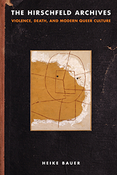

<body bgcolor="#FFFFFF" text="#000000" link="#0000FF" vlink="#CC0000" alink="#CC0000"><center><hr width="350" size="1" align="center" noshade>Examines the violence of queer existence in the first part of the twentieth century<hr width="350" size="1" align="center" noshade><p><a href="https://cdcshoppingcart.uchicago.edu/Cart/ChicagoBook.aspx?ISBN=&&PRESS=temple" target="_top">Buy this book!</a> | <a href="https://cdcshoppingcart.uchicago.edu/Cart/Cart.aspx?PRESS=temple" target="_top">View Cart</a> | <a href="https://cdcshoppingcart.uchicago.edu/Cart/Cart.aspx?PRESS=temple" target="_top">Check Out</a></p><p></p></center><!--none//--><h1 class = "booktitle">The Hirschfeld Archives</h1> <h1 class = "subtitle">Violence, Death, and Modern Queer Culture</h1>
<h3>Heike Bauer</h3>
paper: $34.95, May 17<BR>EAN:&nbsp;978-1-4399-1433-5<BR><font color=#990033>Not Yet Published Preorder</FONT><font size=-7><br>&nbsp;</font></p><p class="info">cloth: $92.50, <BR>EAN:&nbsp;978-1-4399-1432-8<BR><font color=#990033>Not Yet Published Preorder</FONT><font size=-7><br>&nbsp;</font></p><p class="info"></p></td></tr></table>
<BR> <p class="info">236 pp<BR> 6 x 9<BR> 7 halftones <p class="info"><font size=-7>&nbsp;</font></p><p class="info">
</P><BLOCKQUOTE></BLOCKQUOTE>
<p>
Influential sexologist and activist Magnus Hirschfeld founded Berlin's Institute of Sexual Sciences in 1919 as a home and workplace to study homosexual rights activism and support transgender people. It was destroyed by the Nazis in 1933. This episode in history prompted Heike Bauer to ask, Is violence an intrinsic part of modern queer culture? <i>The Hirschfeld Archives </i>answers this critical question by examining the violence that shaped queer existence in the first part of the twentieth century. <br>
<p>Hirschfeld himself escaped the Nazis, and many of his papers and publications survived. Bauer examines his accounts of same-sex life from published and unpublished writings, as well as books, articles, diaries, films, photographs and other visual materials, to scrutinize how violence-including persecution, death and suicide-shaped the development of homosexual rights and political activism. <br>
<p><i>The Hirschfeld Archives </i>brings these fragments of queer experience together to reveal many unknown and interesting accounts of LGBTQ life in the early twentieth century, but also to illuminate the fact that homosexual rights politics were haunted from the beginning by racism, colonial brutality, and gender violence.
<br>
<P CLASS="top"><A HREF="#top">BACK TO TOP</A></P>&nbsp;
<BR>&nbsp;
&nbsp;<P>
</P><BR>&nbsp;
<H2 class="inpageheading"><A NAME="author bio"></a>About the Author(s)</H2><p>
<b>Heike Bauer</b> is a Senior Lecturer in English and Gender Studies at Birkbeck College, University of London. She is the author of<i> English Literary Sexology: Translations of Inversion, 1860-1930</i>, the editor of <i>Women and Cross-dressing, 1800-1939</i> and <i>Sexology and Translation: Cultural and Scientific Encounters across the Modern World</i> (Temple), and the co-editor (with Matt Cook) of<i> Queer 1950s: Rethinking Sexuality in the Postwar Years</i>.
<br>
<P CLASS="top"><A HREF="#top">BACK TO TOP</A></P>
<p><h2 class="inpageheading"><A NAME="subjects"></a>Subject Categories</h2><P><A HREF="/tempress/gender.html" TARGET="_top">Gender Studies</a><BR><P><A HREF="/tempress/history.html" TARGET="_top">History</a><BR><P><A HREF="/tempress/sexual.html" TARGET="_top">Sexuality Studies/Sexual Identity</a></P></P>
</p>
<P>
<h2 class="inpageheading">In the Series</h2>�
<p>�<a target="_top" href="http://www.temple.edu/tempress/sexual_studies.html" OnMouseOver="window.status='Click for other books in this series!';return true;"OnMouseOut="window.status=" ><i>Sexuality Studies</i></a></P>
<p><p>
<em>Sexuality Studies</em>, edited by Janice Irvine and Regina Kunzel, features work in sexuality studies broadly construed, in its social, cultural, and political dimensions, and in both historical and contemporary formations. The series includes titles located within disciplinary and interdisciplinary frames that combine theoretical methodologies with empirical research.
<br />
</p></P>
�</P>��
</P>
<p align="center"><a href="https://cdcshoppingcart.uchicago.edu/Cart/ChicagoBook.aspx?ISBN=&&PRESS=temple" target="_top">Buy this book!</a> | <a href="https://cdcshoppingcart.uchicago.edu/Cart/Cart.aspx?PRESS=temple" target="_top">View Cart</a> | <a href="https://cdcshoppingcart.uchicago.edu/Cart/Cart.aspx?PRESS=temple" target="_top">Check Out</a></p><p><font face="Arial" size="1"><a href="copyright.html" onMouseOver="window.status='Web Copyright Policy';return true;" onMouseOut="window.status=''" title="Web Copyright Policy">&copy;</a> 2017 <a href="http://www.temple.edu" target="new" onMouseOver="window.status='Link to Temple University home page';return true;" onMouseOut="window.status=''" title="Link to Temple University home page">Temple University</a>. All Rights Reserved. http://www.temple.edu/tempress/titles/2432_reg.html</font></p>